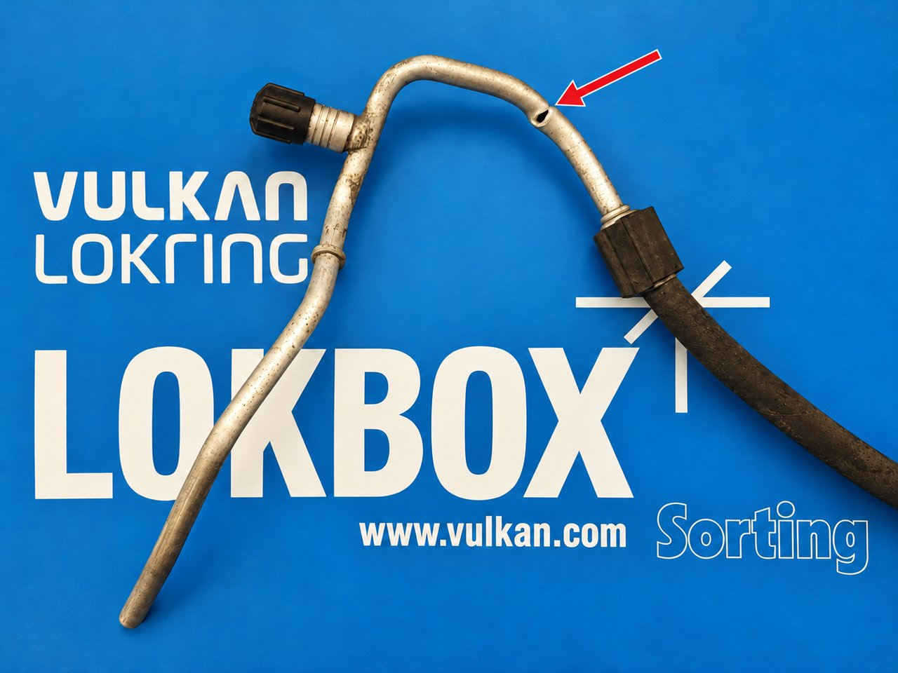

Кондиціонер — діагностика, заправлення та очищення

Професійне обслуговування автомобільних кондиціонерів
J&S servis спеціалізується на автомобілях Volkswagen, Audi, Škoda, SEAT і CUPRA з 1994 року. Ми діагностуємо, обслуговуємо, заправляємо, очищуємо й ремонтуємо кондиціонери з холодоагентами R134a, R1234yf і R744 (CO₂).
Для передбачених діагностичних і сервісних функцій використовуємо систему ODIS.
Ми перевіряємо, обслуговуємо й заправляємо кондиціонери спеціалізованим сервісним обладнанням. Професійне обслуговування охоплює перевірку роботи кондиціонера, відкачування й заправлення холодоагенту за специфікацією виробника автомобіля та перевірку герметичності за передбаченою процедурою.
R134a – обслуговування кондиціонерів для старих автомобілів
R134a — холодоагент, який використовується в багатьох старіших автомобілях. Для систем, розрахованих виробником на нього, забезпечуємо перевірку роботи, обслуговування й ремонт. Кількість холодоагенту та потрібну компресорну оливу визначаємо за специфікацією конкретного автомобіля.
За недостатнього охолодження або підозри на витік рекомендуємо відповідну діагностику. Саме дозаправлення холодоагентом не усуває можливого витоку або іншої несправності системи.
R1234yf – обслуговування кондиціонерів для нових автомобілів
R1234yf використовується в багатьох новіших автомобілях і має значно нижчий потенціал глобального потепління, ніж R134a. Він потребує сервісного обладнання, призначеного для цього холодоагенту, та дотримання відповідних робочих процедур.
На J&S SERVIS ми здійснюємо перевірку, обслуговування та ремонт відповідно до вимог виробника автомобіля. Ми завжди перевіряємо тип холодоагенту для конкретного автомобіля; рік виробництва сам по собі не є достатньою основою для його визначення.
R744 (CO₂) — спеціалізоване обслуговування кондиціонерів і теплових насосів
R744 — позначення вуглекислого газу, який використовується як холодоагент. Він застосовується в окремих системах кондиціонування й теплових насосах автомобілів, зокрема деяких електромобілів.
Ці системи працюють за значно вищого тиску, ніж кондиціонери з R134a або R1234yf, тому потребують спеціального сервісного обладнання та відповідних процедур. У J&S SERVIS використовуємо обладнання для R744 та оригінальну систему ODIS для відповідних діагностичних і сервісних функцій. Обсяг робіт обираємо за конкретною системою й документацією виробника.
Ми обслуговуємо системи кондиціонування повітря високого тиску та теплові насоси для вибраних електромобілів Volkswagen Group.
Відповідно до конструкції конкретного автомобіля та процедури виробника виконуємо кероване діагностикою перемикання клапанів, безпечне скидання тиску в контурі, вакуумування, заправлення передбаченою кількістю холодоагенту й перевірку роботи системи.
Прайс-лист послуг. Ціна включає роботу, холодоагент і необхідні діагностичні процедури. Кінцева ціна залежить від транспортного засобу та фактично необхідної роботи. Будь-які додаткові роботи та їх вартість узгоджуються із замовником заздалегідь.

Ми використовуємо тільки тип холодоагенту, який призначений виробником конкретного автомобіля. R134a, R1234yf і R744 не є взаємозамінними холодоагентами для нормального поповнення системи.
Базове обслуговування кондиціонерів R134a і R1234yf
- Відкачування холодоагенту й перевірка його кількості.
- Вакуумування контуру кондиціонера.
- Заправка вказаною кількістю холодоагенту.
- Перевірка роботи кондиціонера після обслуговування.
Прайс-лист послуг. Доданий холодоагент оплачується окремо за фактичною кількістю та поточною ціною. Розширена діагностика й ремонт не входять до базової ціни.
Ремонт трубопроводів кондиціонера
Ми ремонтуємо трубопроводи кондиціонерів за технологією VULKAN LOKRING.
Ми не використовуємо цю технологію для систем R744 (CO₂).



Очищення, дезінфекція, діагностика та ремонт
- Очищення кондиціонера пінним засобом, дезінфекція та озонування салону.
- Виявлення витоку холодоагенту та перевірка тиску згідно з правилами виробника.
- Діагностика систем кондиціонування та терморегулювання гібридних та електромобілів.
Очищення, дезінфекція, розширена діагностика та ремонт оплачуються окремо за обсягом виконаних робіт.
Ми виконуємо всі сервісні операції відповідно до сервісних процедур виробника конкретного автомобіля.
Перед записом на обслуговування
Ціну базового обслуговування не слід ототожнювати з вартістю ремонту витоку чи іншого пошкодження. До початку робіт уточніть також ціну та кількість холодоагенту для дозаправлення. Для гібридів і електромобілів конкретний обсяг потрібно погодити заздалегідь; пропозиція кондиціонування не поширюється на ремонт високовольтних батарей або втручання у високовольтні компоненти.